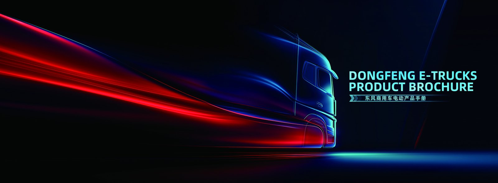

Buying an EV truck in Saudi Arabia is a significant capital decision, and the warranty behind it matters as much as the purchase price. This guide explains exactly what is covered on a TE9L electric tractor, how claims work from overseas, and how to protect your cover. See the TE9L electric tractor page and our Saudi Arabia electric truck market guide.
Every TE9L we export ships with a two-tier warranty: the vehicle chassis, cab and drivetrain are covered for 3 years or 150,000 km, and the CATL LFP traction battery carries a separate 8-year or 4,500-cycle warranty to 70% state of health. Understanding that split matters, because a battery claim is not handled like a chassis claim. For Saudi buyers in Saudi Arabia, the warranty is valid on condition that the truck is serviced within the recommended intervals and that the pack is not physically damaged or run outside its thermal limits.
A battery claim starts with data, not with a phone call. The first step is to export the battery-management-system log through the vehicle diagnostic port and send it to us along with the VIN, the duty cycle and a description of the symptom. Our engineers compare the state-of-health curve against the warranty baseline. If the pack is below 70% SOH within the term through no fault of operation, we arrange a replacement module or pack. For fleets in Riyadh, Jeddah and Dammam, we keep a nominated service partner who handles the physical swap so the truck is out of service for days, not weeks.
| Specification | TE9L value |
|---|---|
| Configuration | 6x4 electric tractor |
| Battery | CATL LFP 420-466 kWh |
| Drive motor | LvKong PMSM 410 kW (2,800 Nm) |
| Real-world range | 300-350 km |
| DC charge | 20-80% in 50-70 min |
| Capacity | up to 65,000 kg |
| Battery warranty | 8 years / 4,500 cycles to 70% SOH |
| FOB China price | US$110,000-140,000 |
The single most common reason a claim stalls is missing service records. Keep every inspection sheet, every coolant and gearbox-oil change, and every BMS log download. A simple digital log exported monthly to the cloud is enough. If a pack fails and the records show the truck was never serviced, the warranty is hard to defend. For Saudi Arabia operators who run mixed fleets, we recommend tagging the EV service records separately from the diesel records so nothing is misfiled.
Warranty exclusions are the same across the industry: accident damage, water ingress from flooding, unauthorised HV work, use of non-approved coolant, operation beyond rated payload, and normal consumable wear such as tyres, brake pads and filters. The two that catch fleets out are unauthorised HV work and non-approved coolant, both easily avoided by routing all electrical work through certified technicians and sourcing consumables from us. We publish an approved-consumables list in the local language for Saudi customers.
Beyond the standard terms, we offer extended drivetrain cover and a prepaid service contract that bundles scheduled inspections, coolant changes and BMS health reports into a fixed annual cost. For a TE9L fleet in Riyadh, Jeddah and Dammam, this turns maintenance from a variable surprise into a predictable line item and keeps the truck compliant with the warranty conditions automatically. It also gives the fleet a single point of contact for both parts and technical support.
Warranty terms shape the numbers behind the purchase. Because the pack is covered for eight years, the major residual risk in an electric truck — battery replacement — is removed from the operator’s balance sheet for most of the first ownership cycle. That is why TE9L fleets in Saudi Arabia can be underwritten on a lower cost per kilometre than diesel even before fuel savings are counted. We provide a warranty-adjusted TCO model at quotation stage so finance teams can see the effect clearly.
The conditions that make an electric truck viable are all present in Saudi Arabia. Vision 2030 electrification mandates and abundant solar. Freight demand concentrates in and around Riyadh, Jeddah and Dammam, where routes are short and predictable and the depot is never far away. Fuel logistics add cost and delay that a fleet charging its own vehicles simply avoids. For a TE9L electric tractor on a giga-project construction and city logistics duty cycle, this is not an experimental technology but a practical replacement for diesel, and the operators moving first are the ones who lock in the lowest cost per kilometre before their competitors do.
Electrifying a fleet in Saudi Arabia is a project, and running it in phases is what keeps it manageable. Phase one is a site and route audit: list every duty cycle, measure real daily distance and load, and map the depot power supply. Phase two is a pilot of two to five TE9L units on the most predictable routes, with chargers installed and drivers trained. Phase three is measurement — energy cost per kilometre, uptime, maintenance hours. Phase four is scaling what the data supports. Each phase de-risks the next and keeps the capital commitment matched to proven performance rather than optimism.
A TE9L electric tractor carries a CATL LFP pack of 420-466 kWh and delivers a working range of 300-350 km, which fits a giga-project construction and city logistics duty cycle in Riyadh, Jeddah and Dammam with margin. The drive motor produces 410 kW (2,800 Nm), and DC charging takes the pack from 20% to 80% in the time shown in the specification table above. FOB China pricing for this configuration is US$110,000-140,000, and the landed cost depends on the destination tariff and duty position, which we confirm before quotation. Against diesel, the decisive lines are energy cost per kilometre, maintenance cost per kilometre, and price certainty across the life of the truck.
Within the TE9L range there are choices that matter more than cosmetics. The 6x4 layout suits the axle load and traction pattern of your duty cycle. Battery capacity of 420-466 kWh should be sized to the longest realistic daily route plus a safety margin, not to the biggest number on the brochure. Body and equipment specification — tipper, box, reefer, tank or compactor — should be matched precisely to the job in Saudi Arabia. Getting these four decisions right at order stage is far cheaper than modifying a truck after it lands.
Buying an electric commercial vehicle from China is not the same as buying a diesel truck. The exporter must understand high-voltage shipping requirements, battery transport regulations, charging compatibility with the destination grid, and the spare-parts and service picture in Saudi Arabia. Shaanxi Fenghan Trading has exported Dongfeng EV trucks across Africa, the Middle East, Central Asia and Latin America, and every shipment includes commissioning support, translated operator documentation and a starter spares package. For Saudi customers, that support is the difference between a truck that works on paper and one that works on site.
Ready to electrify your fleet? Contact Shaanxi Fenghan Trading — authorized Dongfeng EV truck exporter. WhatsApp: +86 153 1943 1311 | Email: sales@fenghan-trade.com | dongfengevtrucks.com
🌐 Our Network: Fenghan Trade (SAGMOTO/SHACMAN Truck Export) · 4x2 6x4 tractor truck prime mover